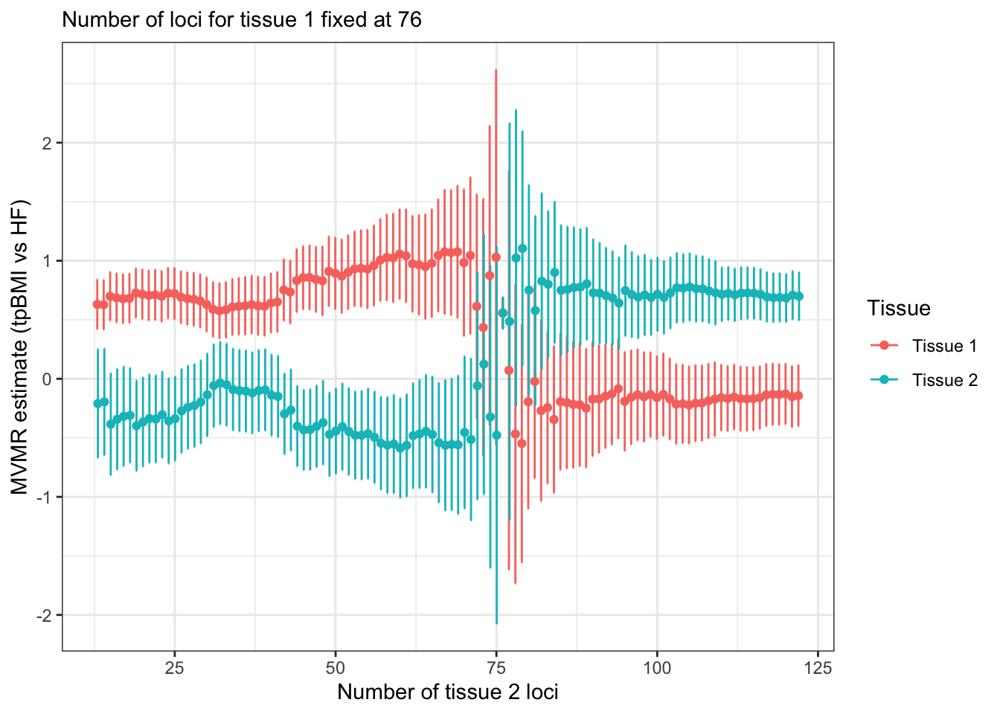

library(data.table)
library(ggplot2)
library(ggpubr)
library(genepi.utils)
library(tibble)
library(knitr)Tissue-partitioned BMI instrument procedure
Motivation
What does the weighting by PPH4 do to tissue partitioned BMI instruments? Let’s simulate some tissue partitioned BMI MR results.
BMI data
First load the BMI GWAS.
bmi <- readRDS(file.path(TPMR_DIR, "output", "tmp_objects", "obj_bmi.RDS"))
clumps <- clump(as.data.table(bmi), p1=5e-8, r2=0.001, kb=10000, plink2=PLINK2, plink_ref=UKBB_REFERENCE)[index==TRUE]
bmi <- subset_gwas(bmi, clumps$rsid)
kable(head(clumps, 5), caption = "BMI lead variants")| rsid | chr | bp | ea | oa | eaf | beta | se | p | n | ncase | trait | id | strand | imputed | info | q | q_p | i2 | proxy_rsid | proxy_chr | proxy_bp | proxy_ea | proxy_oa | proxy_eaf | proxy_r2 | snp | index | clump |
|---|---|---|---|---|---|---|---|---|---|---|---|---|---|---|---|---|---|---|---|---|---|---|---|---|---|---|---|---|
| rs10007906 | 4 | 31023610 | A | C | 0.360300 | 0.0133000 | 0.0018000 | 0 | 686479 | NA | bmi | combined_bmi_giant_ukb_annot.txt | NA | NA | NA | NA | NA | NA | NA | NA | NA | NA | NA | NA | NA | rs10007906 | TRUE | 291 |
| rs1000940 | 17 | 5283252 | A | G | 0.701300 | -0.0154000 | 0.0018000 | 0 | 794558 | NA | bmi | combined_bmi_giant_ukb_annot.txt | NA | NA | NA | NA | NA | NA | NA | NA | NA | NA | NA | NA | NA | rs1000940 | TRUE | 142 |
| rs1007934 | 14 | 73463479 | A | G | 0.415000 | -0.0120000 | 0.0017000 | 0 | 692411 | NA | bmi | combined_bmi_giant_ukb_annot.txt | NA | NA | NA | NA | NA | NA | NA | NA | NA | NA | NA | NA | NA | rs1007934 | TRUE | 407 |
| rs10125137 | 9 | 118644190 | T | C | 0.641786 | -0.0117273 | 0.0020523 | 0 | 463005 | NA | bmi | combined_bmi_giant_ukb_annot.txt | NA | NA | NA | NA | NA | NA | NA | NA | NA | NA | NA | NA | NA | rs10125137 | TRUE | 811 |
| rs10131890 | 14 | 97258752 | A | C | 0.950300 | -0.0222000 | 0.0039000 | 0 | 691777 | NA | bmi | combined_bmi_giant_ukb_annot.txt | NA | NA | NA | NA | NA | NA | NA | NA | NA | NA | NA | NA | NA | rs10131890 | TRUE | 846 |
Heart failure data
Load the heart failure GWAS.
hf <- readRDS(file.path(TPMR_DIR, "output", "tmp_objects", "obj_hf_allcause.RDS"))
hf <- subset_gwas(hf, clumps$rsid)Harmonise the datasets
h <- MR(bmi, hf)
kable(head(as.data.table(h),5), caption = "Harmonised BMI:HF dataset")| rsid | chr | bp | ea | oa | bx | bxse | px | by | byse | py | proxy_e_snp | proxy_o_snp | index_snp | group | ld_info | exposure | outcome |
|---|---|---|---|---|---|---|---|---|---|---|---|---|---|---|---|---|---|
| rs10007906_C_A | 4 | 31023610 | A | C | 0.0133000 | 0.0018000 | 0 | 0.0039 | 0.0051 | 0.44980 | NA | NA | TRUE | NA | FALSE | bmi | hf_allcause |
| rs1000940_G_A | 17 | 5283252 | A | G | -0.0154000 | 0.0018000 | 0 | 0.0011 | 0.0050 | 0.82970 | NA | NA | TRUE | NA | FALSE | bmi | hf_allcause |
| rs1007934_G_A | 14 | 73463479 | A | G | -0.0120000 | 0.0017000 | 0 | -0.0092 | 0.0049 | 0.05931 | NA | NA | TRUE | NA | FALSE | bmi | hf_allcause |
| rs10125137_C_T | 9 | 118644190 | T | C | -0.0117273 | 0.0020523 | 0 | 0.0033 | 0.0049 | 0.50820 | NA | NA | TRUE | NA | FALSE | bmi | hf_allcause |
| rs10131890_C_A | 14 | 97258752 | A | C | -0.0222000 | 0.0039000 | 0 | -0.0211 | 0.0099 | 0.03310 | NA | NA | TRUE | NA | FALSE | bmi | hf_allcause |
Run the MR
res <- run_mr(h)
kable(res, caption = "BMI:HF Mendelian randomisation")| method | correlation | exposure | outcome | n_snp | b | b_se | p | intercept | int_se | int_p | qstat | qstat_p | fstat | condfstat | overdispersion | n_pc | n_hunted | slopehunter_pi | slopehunter_ent |
|---|---|---|---|---|---|---|---|---|---|---|---|---|---|---|---|---|---|---|---|
| mr_ivw | FALSE | bmi | hf_allcause | 874 | 0.4872820 | 0.0165599 | 0 | 0.0000000 | NA | NA | 1592.460 | 0 | 60.70091 | NA | NA | NA | NA | NA | NA |
| mr_egger | FALSE | bmi | hf_allcause | 874 | 0.5367727 | 0.0464790 | 0 | -0.0008232 | 0.0007224 | 0.2544728 | 1590.092 | 0 | NA | NA | NA | NA | NA | NA | NA |
| mr_weighted_median | FALSE | bmi | hf_allcause | 874 | 0.5078217 | 0.0236696 | 0 | 0.0000000 | NA | NA | NA | NA | NA | NA | NA | NA | NA | NA | NA |
| mr_weighted_mode | FALSE | bmi | hf_allcause | 874 | 0.5456300 | 0.0523114 | 0 | 0.0000000 | NA | NA | NA | NA | NA | NA | NA | NA | NA | NA | NA |
Plot MR
plot_mr(h, res)
Select variants
In the Leyden et al. 2022 paper 86 variant colocalise with adipose tissue eQTLs and 140 colocalise with brain tissue eQTLs. There is overlap between the two tissues of 43 variants.
set.seed(123)
tissue1_varid <- sample(h@snps, 140)
overlap_varid <- sample(tissue1_varid, 43)
tissue2_varid <- c(overlap_varid, sample(h@snps[!h@snps %in% overlap_varid], 86-43))
# turn of variants not in either tissue
h@index_snp[!h@snps %in% c(tissue1_varid, tissue2_varid)] <- FALSE
h@exposure <- "BMI tissue 1/2 SNPs"
res1 <- run_mr(h)
kable(res1, caption = "BMI:HF Mendelian randomisation (Tissue 1 & 2 SNPs only)")| method | correlation | exposure | outcome | n_snp | b | b_se | p | intercept | int_se | int_p | qstat | qstat_p | fstat | condfstat | overdispersion | n_pc | n_hunted | slopehunter_pi | slopehunter_ent |
|---|---|---|---|---|---|---|---|---|---|---|---|---|---|---|---|---|---|---|---|
| mr_ivw | FALSE | BMI tissue 1/2 SNPs | hf_allcause | 177 | 0.5108471 | 0.0363407 | 0e+00 | 0.0000000 | NA | NA | 304.2402 | 0 | 61.28134 | NA | NA | NA | NA | NA | NA |
| mr_egger | FALSE | BMI tissue 1/2 SNPs | hf_allcause | 177 | 0.5475313 | 0.1037260 | 1e-07 | -0.0006034 | 0.0015974 | 0.7056336 | 303.9924 | 0 | NA | NA | NA | NA | NA | NA | NA |
| mr_weighted_median | FALSE | BMI tissue 1/2 SNPs | hf_allcause | 177 | 0.5730810 | 0.0494983 | 0e+00 | 0.0000000 | NA | NA | NA | NA | NA | NA | NA | NA | NA | NA | NA |
| mr_weighted_mode | FALSE | BMI tissue 1/2 SNPs | hf_allcause | 177 | 0.5887868 | 0.1022882 | 0e+00 | 0.0000000 | NA | NA | NA | NA | NA | NA | NA | NA | NA | NA | NA |
plot_mr(h, res1)Run multivariable MR (unweighted)
# copy of BMI for tissue 1
bmi_t1 <- bmi
bmi_t1@id <- "bmi tissue 1"
bmi_t1@trait <- "bmi tissue 1"
# copy of BMI for tissue 2
bmi_t2 <- bmi
bmi_t2@id <- "bmi tissue 2"
bmi_t2@trait <- "bmi tissue 2"
# harmonise
h_mvmr <- MR(list(bmi_t1, bmi_t2), hf)
# turn of variants not in either tissue
h_mvmr@index_snp[!h_mvmr@snps %in% c(tissue1_varid, tissue2_varid)] <- FALSE
res2 <- run_mr(h_mvmr, methods="mr_ivw")
kable(res2, caption = "BMI:HF MV Mendelian randomisation")| method | correlation | exposure | outcome | n_snp | b | b_se | p | intercept | int_se | int_p | qstat | qstat_p | fstat | condfstat | overdispersion | n_pc | n_hunted | slopehunter_pi | slopehunter_ent |
|---|---|---|---|---|---|---|---|---|---|---|---|---|---|---|---|---|---|---|---|
| mr_mvivw | FALSE | bmi tissue 1 | hf_allcause | 177 | 0.5108471 | 0.0363407 | 0 | 0 | NA | NA | 302.5116 | 0 | NA | 0 | NA | NA | NA | NA | NA |
| mr_mvivw | FALSE | bmi tissue 2 | hf_allcause | 177 | 0.5108471 | 0.0363407 | 0 | 0 | NA | NA | 302.5116 | 0 | NA | 0 | NA | NA | NA | NA | NA |
plot_mr(h_mvmr, res2)Create different distributions of PPH4 weights
For tissue 2 create different distributions of weights
min_pph4 <- 0.8
weights <- lapply(1:20, function(dist_shape) {
d <- data.table(varid = h_mvmr@snps[h_mvmr@index_snp])
norm <- rnorm(1000, mean = 0, sd = 1)
hi_dist <- 0.9 + (1.0 - 0.9) * (norm - min(norm)) / (max(norm) - min(norm))
lo_dist <- 0.0 + (0.3 - 0.0) * (norm - min(norm)) / (max(norm) - min(norm))
sq_dist <- min_pph4 + (1.0 - min_pph4) * rbeta(1000, shape1 = 1, shape2 = dist_shape)
d[, tissue := fcase(varid %in% overlap_varid, "both",
varid %in% tissue1_varid, "tissue1",
varid %in% tissue2_varid, "tissue2")]
d[tissue=="both", c("pph4_t1", "pph4_t2") := .(sample(hi_dist, .N, replace = T), sample(sq_dist, .N, replace = T))]
d[tissue=="tissue1", c("pph4_t1", "pph4_t2") := .(sample(hi_dist, .N, replace = T), sample(lo_dist, .N, replace = T))]
d[tissue=="tissue2", c("pph4_t1", "pph4_t2") := .(sample(lo_dist, .N, replace = T), sample(sq_dist, .N, replace = T))]
d[, t2_shape := dist_shape]
d
}) |> rbindlist()
weights[, mean_pph4_t2 := round(mean(pph4_t2[tissue %in% c("both","tissue2")]),3), by=.(t2_shape)]
weights[, mean_pph4_t2 := factor(mean_pph4_t2, levels = sort(unique(mean_pph4_t2)))]
ggplot(weights, aes(x=pph4_t2, fill=mean_pph4_t2)) +
geom_density(alpha=0.2) +
theme_classic() +
guides(fill = "none")
Effect different PPH4 weights
Fix the PPH4 weighting on tissue 1 to PPH4=1.0, i.e. unadjusted BMI beta. Then apply the different weights to tissue 2.
res_weighted <- weights[, {
h_tmp <- h_mvmr
order_idx <- match(varid, h_tmp@snps)
h_tmp@bx[order_idx,1] <- h_tmp@bx[order_idx,1] * pph4_t1
h_tmp@bx[order_idx,2] <- h_tmp@bx[order_idx,2] * pph4_t2
.(tissue = rep(h_tmp@exposure_id, each=length(order_idx)), beta_bmi = c(h_tmp@bx[order_idx,1], h_tmp@bx[order_idx,2]), beta_hf = rep(h_tmp@by[order_idx],2))
}, by = mean_pph4_t2]
ggplot(res_weighted, aes(x=beta_bmi, y=beta_hf, color=tissue)) +
geom_point() +
geom_smooth(method="lm", se=F) +
facet_wrap(~mean_pph4_t2, labeller = labeller(mean_pph4_t2 = function(x) paste("Mean PPH4 =", x)))IVW regression by different PPH4 weighting distributions
mr_weighted <- weights[, {
h_tmp <- h_mvmr
order_idx <- match(varid, h_tmp@snps)
h_tmp@bx[order_idx,1] <- h_tmp@bx[order_idx,1] * pph4_t1
h_tmp@bx[order_idx,2] <- h_tmp@bx[order_idx,2] * pph4_t2
r <- run_mr(h_tmp, methods="mr_ivw")
r[, used_mean_pph4 := mean(pph4_t2[pph4_t2>min_pph4])]
r
}, by = mean_pph4_t2]
ggplot(mr_weighted, aes(x=used_mean_pph4, y=exp(b), ymin=exp(b-b_se*1.96), ymax=exp(b+b_se*1.96), color=exposure)) +
geom_point() +
geom_errorbar()
Number of colocalising loci
The actual PPH4 value does not seem to have a great influence, it may be just more to do with the number of colocalising variants in each tissue.
Interpretation
Lower colocalisation evidence (lower PPH4) for any given instrument set leads to increasing MR estimate for the effect of BMI on an outcome due to greater down weighting of the BMI betas and consequent increase in the regression slope.